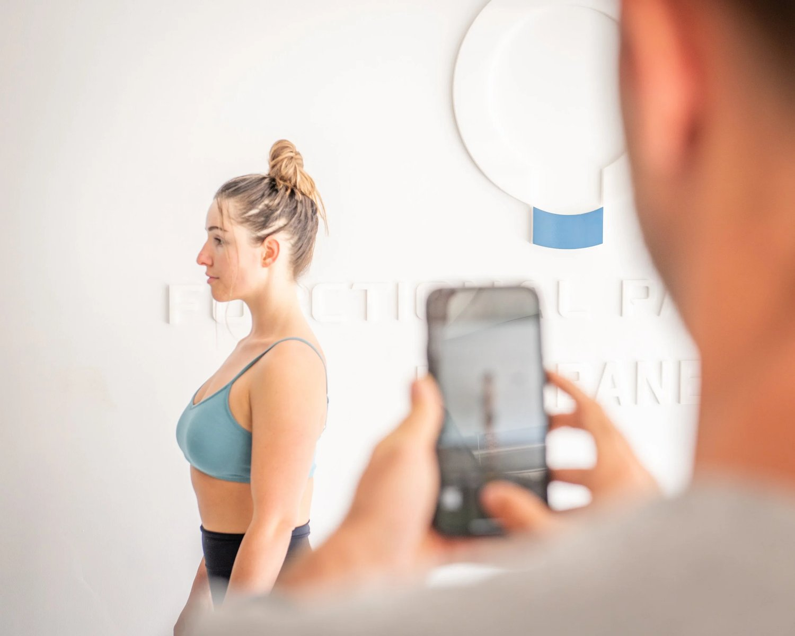
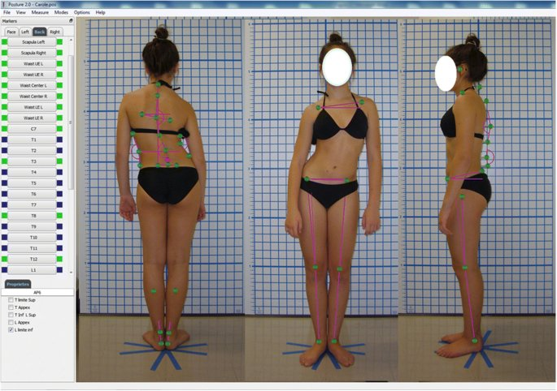

Struggling with chronic pain and poor posture can feel like a never-ending battle, with countless solutions promising relief yet failing to address the heart of the issue. If you're on the hunt for an assessment tool that goes beyond surface-level symptoms to unearth the root cause of your discomfort, you've landed in the right place. Our comprehensive guide introduces you to the ultimate assessment tool designed specifically for individuals battling chronic pain and posture-related challenges. This revolutionary approach not only identifies the underlying factors contributing to your pain but also sets the stage for a transformative journey towards lasting relief and improved posture. Perfect for those in search of a real solution, our tool is your first step towards reclaiming your comfort and confidence. Dive into our expert insights, and discover how you can finally address the core of your chronic pain and posture woes, paving the way for a healthier, more balanced life.
Why Common Postural Assessments Fall Short
Posture assessments are often likened to reading the summary of a novel without delving into its chapters; they provide a snapshot of the situation without uncovering the story behind it. Just as a summary cannot reveal the depth of character development or the intricacies of the plot, posture assessments typically fail to unearth the underlying causes of poor posture. They show us the 'what' but leave us guessing about the 'why' and the 'how'.

Form Follows Function - A Crucial Concept
Consider the analogy of a tree shaped by its environment. Just as a tree's growth adapts to the direction of sunlight, water sources, and prevailing winds, human posture adapts to the movements and habits we engage in daily. The tree's form follows its function in the ecosystem; similarly, our posture is the cumulative result of how we use our bodies. The movements we undertake—be it sitting for prolonged periods, repetitive tasks, or even the way we walk—shape our posture over time. A tree leaning towards the light does not do so by choice but as a response to its environment; likewise, our postural adaptations are responses to our functional habits.
Common Postural Assessment Tools Debunked
Visual Posture Analysis: Often, visual assessments are conducted, where practitioners observe the client standing. While this can highlight misalignments or imbalances, it's akin to judging a book by its cover without understanding the chapters within. It sees the outcome but not the cause.
-
Plumb Line Assessments: This method involves using a plumb line to gauge alignment relative to gravity. Imagine judging the stability of a building by its shadow at noon. It might give you an idea of its straightness but says nothing about the foundation's integrity or the internal structures supporting it.
-
Photographic Analysis: Photos are used to assess posture from various angles. This is like trying to understand the health of a forest from aerial photographs without considering the soil quality, rainfall, or biodiversity that fundamentally influence its state.
-
Computerised Posture Analysis Software: Such tools offer a more sophisticated analysis by generating detailed reports of posture. However, this is akin to using satellite imagery to diagnose the health of a tree without considering the soil it's rooted in, the water it drinks, or the air it breathes. It offers data points but lacks context.

Each of these tools, while useful in mapping the landscape of posture, falls short in identifying the functional habits and environmental factors that mould our posture over time. They capture the form but not the function.
We use some of these tools as our ‘before’ tools to track progress, and that is all. Some practitioners use these tools as their only assessment for posture, and treat the client accordingly. This does not yeild results as you cna never truly understand WHY somebody has a certain posture just by looking at their posture. You need to look at the function that resulted in that form, and alter that.
The Missing Link In Modern Postural Assessments
The crux of the issue is that posture is not merely a static condition to be observed and corrected in isolation; it's a dynamic expression of our lifestyle, habits, and movements. To truly understand and correct poor posture, one must delve into the 'functional narrative' of an individual's life. This involves analyzing not just how a person stands, but how they move throughout their day.
In essence, correcting posture without understanding its functional causes is like pruning a tree without nurturing its roots. For lasting change, we must address the underlying habits and movements that have shaped our posture, much like nurturing a tree with healthy soil, adequate water, and proper light to guide its growth straight and strong. Only then can we truly correct poor posture at its source, fostering a healthier, more balanced body.
At Functional Patterns Brisbane, we recognise that posture is not merely a static attribute but a dynamic expression of how our bodies navigate and interact with the world. This understanding underpins our use of gait analysis as a pivotal tool for identifying and correcting issues in posture. Gait analysis transcends traditional posture assessments by providing a window into the biomechanics and overall physical health of an individual, offering insights that are critical for developing effective interventions.
The Foundation of Gait Analysis
Gait analysis examines the comprehensive evaluation of a person’s walking pattern, including the movement of joints, muscles, and other body segments during walking. This method is grounded in the understanding that human movement is an intricate dance of multiple systems – musculoskeletal, nervous, and cardiovascular. Walking, a fundamental activity, requires the body to maintain balance, generate force, and adapt to environmental changes. Any abnormalities in these systems can manifest as alterations in gait patterns, leading to a cascade of potential issues, including increased injury risk, chronic pain, and poor posture.
Why Gait Analysis Is Indispensable
By focusing on the gait cycle, we can identify asymmetries and abnormalities that might not be apparent in a static posture assessment. This dynamic analysis allows us to observe how individuals orient themselves around their spine and interact with gravity and the ground. Such insights are invaluable because they reveal the underlying causes of poor posture and related issues. For instance, an altered gait pattern might switch off key muscle groups, leading to compensatory behaviors that further entrench postural imbalances.
Targeted Interventions Based on Gait Analysis
With gait analysis, we measure and analyse the movement of the lower limbs, trunk, and pelvis during walking, focusing on joint angles, ratios, muscle activity, and ground reaction forces, among other parameters. This detailed assessment enables us to pinpoint the specific dysfunctions contributing to poor posture and related health concerns. Armed with this information, we can design targeted interventions that address these root causes directly. Rather than offering a one-size-fits-all solution, our interventions are personalised, aiming to improve your gait and thereby mitigate a range of issues from pain and injury risk to asymmetries and scoliosis.
During your first 10 sessions or so, you will be learning new movements and techniques that will most likely feel completely foreign to you. We will be focusing greatly on ratios, coordination and muscle tension.
Every movement you do will be heavily queued, meaning you will be moving slowly through motions while your biomechanics specialist tells you very specific adjustments that they want you to make throughout the course of each movement. These include tilting, shifting and rotating to turn on the correct muscles and to ensure as much symmetry and safety as possible.

Beyond Posture Correction
Our approach at Functional Patterns Brisbane goes beyond merely correcting posture; it's about enhancing your overall quality of life. By improving gait, we not only aim to reduce pain and minimise the risk of injury but also to improve cell signaling and hydration levels, crucial aspects of physical health that are often overlooked. Our goal is to undo the adverse effects of poor posture and gait abnormalities, setting you on a path to a more balanced, healthy, and active lifestyle.
In essence, gait analysis is not just a tool for assessment; it's a foundation for transformation. By understanding and correcting the dynamic processes underlying movement and posture, we empower our clients to achieve lasting improvements in their physical health and well-being. At Functional Patterns Brisbane, we're committed to guiding you through this transformative journey, leveraging the power of gait analysis to unlock your body's full potential.